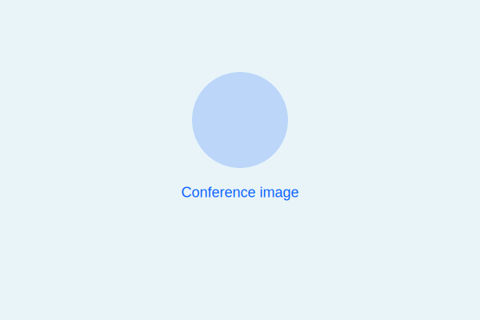

Community Development Programs (Good Works)
At Teach Nations, we believe faith must be demonstrated through action—what we call Good Works. Our Community Development Programs extend Christ's love beyond classrooms into everyday life.
Our programs
Educational Support
Providing school supplies, learning materials, and educational assistance to underprivileged children, helping to break cycles of poverty through access to quality education.
Health Care & Compassion Visits
Weekly hospital visits to support mothers and children with essential items, encouragement, and prayer. We bring hope and practical care to those facing medical challenges.
Support for Mothers
Care, counseling, and material assistance for vulnerable mothers in Kyebando and surrounding communities. We walk alongside mothers facing economic hardship and social marginalization.
Community Empowerment Projects
Outreach and livelihood initiatives that promote dignity, hope, and sustainable transformation. These projects equip community members with skills and resources to improve their quality of life.
In 2025, we launched the TEN Fund—a student-led initiative to sponsor 100 children in school each term with a contribution of UGX 100,000 per child. This program is fully driven by Teach Nations students and reflects our heart for generosity, compassion, and sustainable community transformation.
Conferences
Join regional and global conferences where leaders gather for teaching, strategy and activation.
View calendarCommunity Engagement
Local hubs and online groups that practice discipleship and serve communities.
Get involvedJoin us
Whether through volunteering, donations, or partnerships, you can be part of transforming lives and communities through compassionate action.